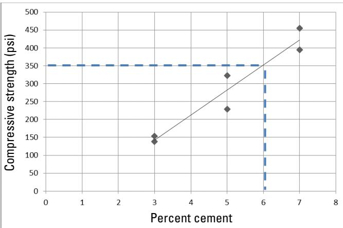

LCC Quality Control and Placement Management
LCC Quality Control and Placement Management is a systematic program that monitors material, process, and environmental variables to ensure lean concrete placed meets its design performance[2][4]. It verifies that mixing water is clean, cement, water and pre‑formed foam are proportioned correctly, controls wet‑cast density through field unit‑weight measurements and ASTM C796 procedures, and watches viscosity via pump‑pressure limits and visual segregation checks[2][4]. Continuous sampling from the moving hose, hourly density testing, slurry checks at least every two hours, and 28‑day unconfined compressive strength testing constitute the primary quality‑control mechanisms that trigger mix‑proportion or pump‑setting adjustments—or work stoppage—when tolerances are exceeded[2][4]. The procedure applies to all LCC mixing, pumping and placement operations under approved site conditions, requiring calibrated equipment, qualified personnel, and documented records of density, strength, water quality and environmental limits[4].
Sources (4)
Purpose and quality objectives
The LCC quality‑control and placement management program evaluates several key material and process characteristics: it verifies that the mixing water is clean by confirming “both the water‑truck tank and the flexible hose delivering water to the reclaimer are free of any contaminant”; it ensures that cement, water and pre‑formed foam are proportioned correctly; it controls the wet cast density of the freshly pumped mix, with “field measurements of the unit weight, or density (mass per unit volume)…the primary quality control mechanisms” and by applying “ASTM C796 procedures” to assess wet density; it monitors viscosity and flowability through “maximum pumping pressure allowances…monitored during placement” and visual checks for segregation (“segregation, where the cement slurry settles and leaves the foam at the surface, can occur … and should be avoided”); and it verifies strength development by testing unconfined compressive strength, requiring a “minimum unconfined compressive strength of 40 lb/in² (0.28 MPa).” [2][4]
The relationship between cement content and resulting strength is illustrated in the following figure.

Unconfined compressive strength vs. percent cement [2]The figure plots the relationship between the percentage of cement and the resulting unconfined compressive strength, showing a positive correlation where higher cement content yields greater strength.
[2] — Ch. 7 (p. 87); [4] — Ch. 2 (pp. 20–28), Ch. 4 (pp. 36–40), Ch. 5 (pp. 42–47), Ch. 6 (pp. 48–59)
LCC Quality Control and Placement Management is intended to ensure that the lean concrete placed meets its design performance by verifying that the wet cast density satisfies the specified target while preserving the engineered air‑void structure, that the mix retains sufficient flowability so pumping pressures remain within project limits and segregation of cement slurry from foam does not occur, and by continuously monitoring for loss of entrained air, density changes, segregation, excessive cure heat, or premature hardening – any of which would jeopardize the required strength and durability of the fill. [4]
[4] — Ch. 2 (pp. 20–28), Ch. 4 (pp. 36–40), Ch. 5 (pp. 42–47), Ch. 6 (pp. 48–59)
Scope and applicability
The LCC Quality Control and Placement Management procedure is required whenever lean concrete—comprising cement, water, and pre‑formed foam—is mixed, pumped, or placed. It applies to all material forms (fresh flowable fill, premixed trucked product) and any construction activity that relies on the self‑consolidating, low‑viscosity nature of LCC, including pump‑and‑hose installations for flowable fills, foundation or open‑top large‑volume fills, pavement layers, pipe work (abandoned pipes, annular spaces), and below‑grade placements. The procedure also governs any lean concrete used as a fill or pavement layer that will encase structural items, geotextiles or geomembranes. It is mandatory for mixes that contain retarders, supplemental cementitious materials, or chemical admixtures, all of which must be certified before production. Placement is limited to approved site conditions: moderate ambient temperatures (approximately 60 °F–80 °F) are typical, while placement is prohibited on frost‑covered or frozen surfaces and when air temperature is at or below 32 °F; special precautions are required above 100 °F or during windy, rainy, or high‑heat conditions. Continuous agitation must be maintained to preserve thixotropic flow, and maximum pumping pressure, distance, and time are monitored to avoid segregation. When the set time is critical (a practical window of two to four hours), the installer may divide the fill into smaller cells or use compatible set‑retarding admixtures. All equipment, materials, and techniques used for trial batching must match those intended for field placement, and daily sampling and density testing are required to verify compliance with design specifications. [4]
[4] — Ch. 2 (pp. 20–22), Ch. 4 (p. 36), Ch. 5 (pp. 42–47), Ch. 6 (pp. 48–59)
Quality‑control and placement management are required for every LCC pour; work may not start until the site conditions shown on the plans are verified and approved by the engineer. The procedure is mandatory whenever LCC is pumped over long distances or into confined spaces, when premixed LCC has been transported in a ready‑mix truck or held for an extended period, and whenever weather conditions could compromise the mix (e.g., heavy rain, frost‑covered surfaces, temperatures below 32 °F or above 100 °F without mitigation). A positive‑displacement pump (progressive cavity, peristaltic, or piston) must be used; other pump types are prohibited unless written engineer approval is obtained. Continuous pumping within project‑specific maximum pressure and time limits is required to avoid segregation, because pressure is the true indicator of flowability. The contractor shall sample and test the LCC as follows: One independent or split sample test for the first batch placed each day, with additional testing at prescribed intervals; acceptance is limited to material that meets the specified density tolerances (no more than 1.0 in.) and achieves the 28‑day unconfined compressive strength. Post‑placement inspection is mandatory on the day after placement to confirm initial set and density criteria. An optional trial batch of at least 1.0 yd³ produced at least thirty calendar days before the main fill may be used to verify mix design and equipment. Placement becomes inappropriate if site pre‑conditions (e.g., embedded items, geotechnical fabrics) are not satisfied, if premixed LCC is transported without strict monitoring, or if environmental limits—heavy rain, frost, extreme temperatures without protective measures—are exceeded. [4]
[4] — Ch. 2 (p. 21), Ch. 5 (pp. 42–44), Ch. 6 (pp. 49–59)
Test methods and procedures
Standardized Test Methods* - All constituent materials must meet current ASTM specifications: Portland cement (ASTM C150, or blended cements ASTM C595/C1157), foaming agent (ASTM C869) tested per ASTM C796, and water (ASTM C1602). The cement‑slurry density is measured in the field according to ASTM D4380. Wet or cast density of fresh LCC is evaluated with ASTM C796 and gravimetric monitoring of pump output follows ASTM D6023. Density, yield, cement content, and air‑content checks are required both before and after pumping. - Laboratory replication of the field mix and strength testing use ASTM C495** for density determination and unconfined compressive strength (average of four cured cylinder breaks).
*Required Equipment - Certified material certificates and test reports for cement, foaming agent, and water. - Foam generator operated per manufacturer’s instructions. - Mixing container of known volume (e.g., 5 gal/19 L bucket) and a calibrated scale to “weigh the full container, subtract the tare weight of the empty container, and calculate the final density of the mixture.” - Sample bucket for field sampling from the hose; engineer‑approved hose for placement. - Positive‑displacement pump (progressive‑cavity, peristaltic, or piston) that delivers a continuous, non‑segregated stream of LCC. - Cylindrical molds (3 in × 6 in) for strength specimens and a curing area meeting ASTM C495 requirements.
Step‑by‑step Quality‑Control & Placement Procedure* 1. Material verification – Prior to any mixing, the engineer approves each material based on laboratory test reports that confirm compliance with the ASTM specifications listed above. 2. Pre‑placement trial batch – “At least 30 calendar days before the start of the placing operations, and in the presence of the engineer, the contractor shall produce a trial batch of LCC using the approved mix design.” The trial batch must be at least 1.0 yd³ (0.76 m³) and produced with the same equipment, materials, and techniques that will be used for the main fill. 3. Trial‑batch evaluation – Split samples are tested for as‑cast density and compressive strength in accordance with ASTM C495; results establish baseline tolerances. 4. Daily/hourly sampling – “The first batch placed each day and every hour thereafter during placement shall be sampled and tested according to ASTM C495.” Fresh LCC is taken from the flowing hose using a sample bucket within 30 minutes of discharge, and its unit weight is recorded. 5. Field density measurement – “Quality control for LCC placement relies on field determination of the wet or cast density using the ASTM C796 standard method for foaming agents.” If the measured as‑cast density falls outside the specified tolerance, the batch must be rejected or the foam dosage adjusted before further placement. 6. Slurry density checks – Cement‑water slurry density is measured every two hours per ASTM D4380 to verify pump performance and flow‑meter accuracy. 7. Laboratory replication – “Quality control of Lean Concrete requires preparing laboratory samples that replicate the field mix and testing them according to ASTM C495.” A known‑volume container is filled, foam generated as per manufacturer instructions, and the full container weighed to compute mixture density. 8. Oven‑dry density calculation – After placement, cast bulk density and moisture content are measured; oven‑dry density is back‑calculated using the standard relationship (OD = Cast ÷ [1 + Moisture %]). 9. Strength testing – Eight 3 in × 6 in cylindrical specimens are molded for each sampled batch, cured, and tested at 28 days; compressive strength is reported as the average of four properly cured cylinder breaks per ASTM C495. 10. Pump & placement monitoring – Continuous monitoring of density, yield, cement content, and gravimetric air‑content before and after pumping follows ASTM D6023. Any rise in measured density triggers immediate adjustment of pump pressure or mix proportions. 11. Frequency of checks – Final mix density is re‑measured at least every thirty minutes (or whenever a material change is observed); slurry density checks are performed at a minimum of every two hours. 12. Post‑placement actions** – After the LCC hardens (8–24 hours), hardened density should match the recorded cast density; significant deviation requires remedial measures such as sealant application. End‑of‑day cleaning of hoses and pump interiors is performed immediately to prevent paste buildup.
By following these ASTM‑based test methods, using the specified equipment, and adhering to the step‑by‑step procedures, practitioners can reliably control LCC quality and achieve design density, strength, and durability targets. [4]
[4] — Ch. 2 (pp. 20–21), Ch. 4 (pp. 39–40), Ch. 5 (pp. 46–47), Ch. 6 (pp. 48–59)
Valid LCC quality‑control and placement depend on three interrelated pillars—calibrated equipment, qualified personnel, and strict environmental controls. All mixing, auger‑dispensing, flow‑meter, and foam‑generation hardware must be verified for accuracy before each batch and rechecked during operation; “The auger system can be extremely accurate when the equipment is properly calibrated,” and slurry density checks “should be performed regularly to ensure that the flow meters for the cement and water are properly operating.” Water addition must be measured within a ±1 % tolerance, and “All equipment shall be calibrated to produce consistent preformed foam with a stable, uniform cellular structure.” Operator qualifications require “Prequalification of the installer performing the work, based on the manufacturer’s approval of processes and equipment,” and “Both contractor and project personnel present on site should be trained.” The mixer operator together with a designated project inspector continuously monitor flow rates, densities, and blend consistency: “The operator of the mixer and the project inspector should monitor the mixture exiting the auger for consistent properties and well‑blended materials.” Environmental controls mandate monitoring weather before placement; “If heavy rain is imminent, placement of the LCC should be delayed,” and special precautions are required when ambient temperature is below 32 °F (0 °C) or above 100 °F (38 °C). The receiving surface must be clean, free of frost, ponded water, and uniformly moist: “Prior to LCC placement, the surface of the site shall be clean and free of foreign material, ponded water, and frost,” and “The site must be uniformly moist at the time of LCC placement.” LCC may not be placed on frozen ground or when temperatures are expected to fall below 32 °F. During hot or windy conditions protective measures such as wind breaks, cooled mix water, reduced lift heights, or covering the fresh fill are required: “Precautions may include temporary wind breaks … cooling of slurry mix water … reducing lift heights, and/or applying a protective cover.” Finally, the water used for foam must be free of contaminants; “Interior of the water tank is not contaminated” and “The flexible hose used to convey water from the water truck to the reclaimer is clean and not contaminated.” [2][4]
[2] — Ch. 7 (p. 87); [4] — Ch. 2 (pp. 22–28), Ch. 4 (p. 36), Ch. 5 (pp. 42–46), Ch. 6 (pp. 48–58)
Sampling and testing frequency
Quality control determines sampling points by taking fresh LCC from the moving hose with a bucket, from any pools that form on the placement surface, and from the hose outlet within thirty minutes of discharge to verify that the cast density matches design values. Field monitoring should be performed by checking the density in accordance with ASTM D6023, Standard Test Method for Density (Unit Weight), Yield, Cement Content, and Air Content (Gravimetric) of Controlled Low‑Strength Material (CLSM), before and after pumping, observing any increase. Slurry density should be tested at a minimum of every two hours; final density testing should be performed at a minimum of every 30 minutes (and preferably more often) or anytime a change in material is observed from the machine. The LCC quality‑control plan requires that, before any placement begins, an optional trial batch be produced offsite at least thirty calendar days in advance… split samples from that batch are tested for as‑cast density and compressive strength.
Based on these directives, sampling locations are fixed at three critical points: (1) the moving hose (pre‑foam), (2) any surface pools or the hose outlet within 30 min of discharge (post‑foam), and (3) a pre‑placement trial batch that serves as a baseline. The amount sampled is sized to meet ASTM test requirements – typically a bucket‑size portion for gravimetric density, at least two specimens per density test, eight cylindrical cores for unconfined compressive strength, or larger groups (e.g., 60 cores divided into sub‑groups) when batch‑wide strength verification is required. Frequency is driven by the need to catch drift promptly: density checks are performed before and after every pump cycle, slurry density at least every two hours, final mixed density at a minimum of every 30 minutes or whenever a material change is observed, and additional hourly or bi‑hourly samples for as‑cast density and strength during continuous placement. If any measured value falls outside the specified tolerance, corrective actions such as mix adjustments or additional sealing are implemented. [4]
[4] — Ch. 2 (pp. 20–23), Ch. 5 (pp. 46–47), Ch. 6 (pp. 48–59)
Representative LCC quality‑control sampling is achieved by a layered approach that ties each measurement directly to the material, process, lot, or finished placement. Fresh mix should be taken straight from the moving hose with a sample bucket—“LCC is typically sampled from a flowing hose using a sample bucket, and measurements are taken frequently during production.”—and additional samples collected at the placement area (where the concrete pools) or at the hose outlet within about 30 minutes of installation to confirm that cast density matches design values. Field density measurements, together with the known water‑to‑cement ratio, serve as the primary indicator of compliance—“Field measurements of the unit weight, or density (mass per volume), along with the known w/c ratio of the fresh LCC mixture, are the primary quality control mechanisms.” Density should be recorded on a regular schedule that mirrors production: slurry density at least every two hours and finished‑mix density at least every 30 minutes (or whenever a material change is observed). Pre‑pump and post‑pump densities must be measured according to ASTM D6023 so any increase—signifying foam void collapse during pumping—can be identified and corrected. For compressive strength, the first batch placed each day and subsequent batches are sampled on a set interval—“Samples must be taken from the initial batch placed each day and then at regular intervals during placement—hourly for as‑cast density and every two hours for unconfined compressive strength.”—with eight cylindrical specimens per sampled batch tested after 28 days; results are reported as the average of four breaks, and a minimum of two daily batches are evaluated. To capture lot variability, a large number of specimens (e.g., sixty samples from a single production batch) should be divided into sub‑sets for curing and testing—“To obtain a representative picture of LCC quality, the study took a large number of specimens—60 samples drawn from a single production batch—and partitioned them into several sub‑sets (six groups of ten).” A trial batch produced at least thirty days before placement, using the approved mix design, identical equipment, materials and techniques, provides baseline density and strength data; split samples are evaluated by both contractor and engineer. Finally, water used in the mix must be sampled from the project’s source and verified against ASTM C1602 before mixing begins to ensure that deleterious constituents do not compromise the material. [4]
[4] — Ch. 2 (pp. 20–23), Ch. 4 (p. 36), Ch. 5 (pp. 46–47), Ch. 6 (pp. 48–59)
Acceptance criteria and tolerances
Acceptance of LCC quality‑control and placement is governed by a set of numerical limits, statistical checks, and visual standards. Set‑time: “The mix must stay workable for the practical set‑time window – roughly two to four hours before setting begins”; if the mix sets faster, the mix or placement method must be altered. Strength: The material’s “minimum unconfined compressive strength is 40 lb/in² (0.28 MPa) at a density of about 30 lb/ft³ (480 kg/m³)”, with typical batch results ranging from 50 to 150 lb/in²; acceptance requires the average of four 28‑day cylinder breaks per ASTM C495 to meet or exceed the class minimum or 20 psi (0.14 MPa), whichever is lower. Density: Cement‑water slurry density must be between 105 and 115 lb/ft³, verified at least every two hours; in‑place LCC density is checked before and after pumping (ASTM D6023) with a minimum of one test every 30 minutes and the as‑cast density taken as the average of at least two tests. The average must fall within the tolerance specified for the project (Section 6.8.3). Water & component control: Water addition is measured to ±1 % and all component flow rates are displayed continuously on a visible meter. Environmental limits: Placement is prohibited during heavy rain that can cause segregation, when ambient temperature ≤32 °F (0 °C) or ≥100 °F (38 °C) without mitigation, and on frost‑covered surfaces. Placement geometry: Lifts shall not exceed 4 ft (1.2 m) unless special controls are used; final surface elevation must be within ±0.1 ft (±30 mm) of the design grade, vertical joints spaced ≥10 ft (3 m) apart, and no impressions deeper than 1.0 in (25 mm) after the day‑after inspection. Cracks or indentations greater than 0.25 in (6 mm) require work stoppage. Load & penetration: After a typical 10–14 hour cure at moderate temperatures (60–80 °F / 16–27 °C), the surface must support foot traffic (~16 lb/in² or 0.11 MPa) with no more than 1 in (25 mm) of penetration. Visual inspection: “visual inspection criteria demand a homogeneous, lump‑free mixture that exits the equipment as a thick gray‑pancake‑batter‑like slurry”; the placed material should flow flat with a defined splattered texture and exhibit no cracks, fissures, foamy patches, or sunken areas. When all numerical limits, statistical averages, and visual standards are satisfied, the LCC work is deemed acceptable. [4]
[4] — Ch. 2 (pp. 21–23), Ch. 5 (pp. 44–47), Ch. 6 (pp. 48–59)
LCC quality control evaluates each batch by measuring as‑cast density and unconfined compressive strength against the limits set in the specification. The contractor must obtain an average density from at least two tests for every hour of placement, and a 28‑day strength value that is the average of four cylinder breaks; these individual averages are compared directly to the tolerance bands, and any batch whose average falls outside triggers rejection or a mix adjustment by altering the preformed foam. The engineer performs independent or split samples on the first daily batch and compares his results with the contractor’s; differences are judged acceptable only if they lie within the prescribed limits, otherwise corrective actions such as equipment repair, mixture suspension, or material replacement are required. Final acceptance is granted after the engineer validates the contractor’s QC data, confirms that all test values meet specification limits, and records any invalidated tests. [4]
[4] — Ch. 6 (pp. 58–59)
Quality control and process monitoring
The quality‑control program for Lean Concrete Cellular (LCC) must continuously monitor a set of interrelated characteristics throughout both production and placement. First, the mix design is verified by exact measurement of each constituent—cement, water, and pre‑formed foam—and by confirming that all materials carry the required certifications. The water‑to‑cement (w/c) ratio and the resulting wet density are the most immediate indicators of mix consistency; frequent sampling from the hose and field measurement of unit weight confirm that the blend stays within design limits. “Field measurements of the unit weight, or density (mass per unit volume), along with the known w/c ratio of the fresh LCC mixture, are the primary quality control mechanisms.” Foam quality is equally critical because it creates and preserves the cellular structure; the foaming agent must generate a stable air‑void system that meets ASTM specifications and “the preformed foam must conform to the properties listed in ASTM C869 when tested following the procedures in ASTM C796.” During pumping, flowability is monitored by recording pump pressure and fill time; excessive pressure signals loss of air voids or segregation. Density checks are performed at regular intervals—slurry density at least every two hours and in‑place density at least every thirty minutes—to catch any rise that would indicate foam collapse. Visual inspection for uniform texture, absence of surface foamy layers, and lack of cracks further supports instrumental data.
Water quality is also a required characteristic; all water used on site must remain free of contaminants, which means confirming “Interior of the water tank is not contaminated.” and that “The flexible hose used to convey water from the water truck to the reclaimer is clean and not contaminated.” Any sign of contamination requires immediate cleaning or replacement before mixing can continue.
Environmental conditions are tracked because temperature directly influences set time, cure rate, and moisture loss. “Ambient temperature is critical; placement must be avoided on frost‑covered or frozen surfaces and when air temperature is at or below 32 °F (0 °C).” When temperatures exceed the moderate range, additional controls such as insulated blankets, wind breaks, or cooled mixing water are employed to keep the set time within the expected two‑to‑four‑hour window.
Finally, mechanical performance targets—compressive strength, shear strength, resilient modulus, and California bearing ratio (CBR)—are verified through laboratory testing of representative samples according to ASTM C495. By systematically monitoring these material properties, process parameters, water cleanliness, environmental factors, and equipment pressures, the LCC program maintains a uniform, stable fill that meets design specifications throughout production and construction. [2][4]
[2] — Ch. 7 (p. 87); [4] — Ch. 2 (pp. 20–28), Ch. 4 (pp. 36–40), Ch. 5 (pp. 42–47), Ch. 6 (pp. 48–59)
Process adjustments or additional testing must be initiated whenever any observable trend, deviation, or test result indicates that the low‑strength concrete (LCC) is departing from its prescribed performance envelope. Key triggers include:
-
Density deviations – an increase in wet‑cast density measured in the field diverges from the design target—either rising as air voids collapse or falling as moisture evaporates beyond the normal 8–24 hour hardening period; oven‑dry density obtained from field samples that is markedly lower than that calculated from cast density and moisture content, or that fails to show the expected slight increase during early hydration followed by a stable value, also signals mix problems. Any rise in slurry density before versus after pumping (per ASTM D6023) indicates air‑void collapse and requires immediate correction of water‑cement ratio, foam dosage, or pump settings.
-
Pumping pressure trends – an upward trend that approaches or exceeds the pre‑established maximum allowance, or pumping durations that surpass defined limits for confined spaces, trigger a review of mix design, pump parameters, and flowability verification.
-
Set‑time and workability issues – set time falling outside the practical two‑to‑four hour window, premature stiffening during placement, or loss of workability after heavy rain demand re‑evaluation of admixture rates, placement size, or protective measures (e.g., delaying placement under imminent heavy rain).
-
Visual defects and segregation – visual signs of segregation—e.g., a crunchy or foamy surface after placement, cracks, fissures, sunken finishes, or lifts exceeding 4 ft depth—signal loss of uniformity and mandate removal of the affected zone and replacement with fresh material.
-
Strength deficiencies – unconfined compressive strength measured in field or laboratory tests that is below the specified minimum or exhibits excessive variability requires additional testing, mix revisions, and possibly suspension of placement until the required class strength (or 20 psi) is achieved.
-
Thermal‑conductivity anomalies – measurements exceeding expected values for the given density, especially when free water is present or long‑term ground moisture raises conductivity, prompt oven‑dry retesting and potential mix redesign to reduce moisture sensitivity.
-
Water quality non‑compliance – water that fails ASTM C1602 specifications necessitates alteration of the mixing procedure, treatment or replacement of the water source, and re‑evaluation of the mix.
-
Premixed LCC handling – any shift in density or air content of premixed material transported in a ready‑mixed concrete truck due to vibration or prolonged residence time must be closely monitored; additional testing or corrective adjustments are required before placement.
-
Environmental conditions – heavy rain, ambient temperatures below 32 °F (0 °C) or above 100 °F (38 °C), wind‑induced evaporation, and frost all trigger protective measures, delays, or supplemental integrity testing.
-
Early‑strength/walkability checks – if the surface cannot be walked without more than one inch of penetration under typical foot pressure (~16 psi) within the expected cure window (10–14 h moderate, up to 20 h cold), extended curing time or mix‑parameter adjustments are required.
-
Foam quality – pre‑formed foam that does not satisfy ASTM C869 when evaluated per ASTM C796 must be reassessed before further placement.
-
Mix consistency from volumetric units – inconsistent properties or poor blending of material exiting an auger‑mix mobile unit, especially during the first discharge, demand adjustment of ingredient flow rates prior to continued placement.
Collectively, these trends, deviations, and test outcomes form the decision matrix for initiating corrective actions or supplemental testing to ensure LCC quality and performance. [4]
[4] — Ch. 2 (pp. 20–28), Ch. 4 (p. 36), Ch. 5 (pp. 42–47), Ch. 6 (pp. 48–59)
Nonconformance and corrective action
When inspection or testing uncovers non‑conforming LCC, the QC protocol mandates a systematic response. First, the inspector must identify the root cause—such as an oversized placement area, incorrect water‑to‑cement ratio, leaking forms, excessive travel distance, or foam segregation—and correct it where feasible by adjusting mix design, limiting lift height, reducing zone size, ensuring continuous mixing, and verifying foam density. If visual defects (cracks, fissures) or surface anomalies are observed, work on the affected lift must be stopped immediately; the contractor must revise waiting periods, mix strength, or equipment as needed and obtain engineer approval before proceeding. Any batch that fails an as‑cast density test must be rejected or the foam content altered prior to further placement. Materials that do not meet specified compressive‑strength limits are deemed unacceptable, and the engineer retains authority to suspend production, reject materials, or impose additional corrective actions until compliance is restored. [4]
[4] — Ch. 6 (pp. 49–59)
Work under LCC Quality Control and Placement Management should be corrected whenever the placement area does not meet site‑preparation requirements—specifically when the surface is not clean or contains foreign material, ponded water, frost, soft or yielding zones—as these conditions must be remedied before any concrete can be placed. The lift may only proceed after the LCC mix has reached its minimum compressive strength; if that strength has not been achieved, placement must be halted and the concrete retested later. If the average as‑cast density of a batch falls outside the tolerance specified in Section 6.8.3, the contractor must either reject the batch outright or adjust the foam content (or other mix parameters) and then re‑test; once the adjusted density is verified by split‑sample comparison, the batch may be accepted. Any cracking or indentations exceeding 0.25 in (6 mm) requires immediate cessation of work, a review of wait time, mix strength, and equipment, and submission of a revised plan to the engineer for approval—this constitutes an investigation further. Material that fails to meet the required unconfined compressive‑strength criteria or cannot be brought within density tolerance after adjustment must be rejected. [4]
[4] — Ch. 6 (pp. 57–59)
Documentation and reporting
All LCC quality‑control documentation must be retained in a comprehensive QC file. The file shall record field density measurements for each batch together with the w/c ratio and detailed sampling information – samples taken from the hose into a bucket and any additional samples collected at the placement area or end of hose within 30 minutes – and the wet‑density test results performed according to ASTM C796. “The QC file should contain field density measurements of each batch together with the recorded w/c ratio, the sampling details (sample taken from the hose into a bucket and any additional samples collected at the placement area or end of hose within 30 minutes), and the wet‑density test results performed according to ASTM C796.” Pump‑pressure logs, end‑of‑day cleaning logs, and pre‑ and post‑pumping density checks (ASTM D6023) must also be entered, as must foam property test outcomes verifying compliance with ASTM C869 using the procedures of ASTM C796. “LCC quality‑control documentation must include pump‑pressure and end‑of‑day cleaning logs, the results of density checks performed in accordance with ASTM D6023 both before and after each pumping operation, and the foam property test outcomes that verify compliance with ASTM C869 using the procedures of ASTM C796.” The schedule for density verification shall include slurry density measured at least every two hours and final placed‑mix density checked at least every thirty minutes or whenever a material change is observed; raw‑material quantities, unit weights, and any on‑site volume surveys are to be logged. Calibration certificates for flow meters and other measuring equipment must be attached. Trial‑batch records produced at least thirty days before placement shall list the date, minimum volume (one cubic yard), equipment, materials, mixing technique, and split‑sample test results for as‑cast density and compressive strength. Site‑condition inspections confirming a clean, dry, uniformly moist surface, formwork design, lift dimensions, elevation tolerances (±0.1 ft), volume placed per hour, and hose‑movement procedures are required. Post‑placement inspection the next day must note surface stability, impression depth (≤1.0 in), slab temperature, and flatness relative to the planned level; compressive‑strength verification (≥20 psi or class strength) is recorded before further work. Daily as‑cast density testing of each batch (ASTM C495) and unconfined compressive‑strength sampling (first batch each day and every two hours thereafter, eight cylinders per sample, 28‑day average of four breaks) are mandatory. Independent or split samples reviewed by the engineer shall be compared to contractor data; any result outside specification triggers a corrective‑action record detailing the deviation and the response—such as adjusting mix proportions, pump settings, applying sealant, equipment repair, mix modification, suspension of production, or halting construction pending engineer approval. “Engineer‑led quality assurance requires independent or split samples for both density and strength, with the engineer’s test results compared against contractor data and specification limits; any discrepancy outside those limits must be documented along with corrective actions such as equipment repair, mix modification, or suspension of production, and the engineer’s decision to validate or invalidate a test result—including the justification—must also be recorded.” All corrective actions, including sealant application for water ingress, mix‑ratio adjustments, pump‑setting changes, or work stoppage, must be logged with date, responsible party, and engineer sign‑off. [4]
[4] — Ch. 2 (p. 20), Ch. 5 (pp. 46–47), Ch. 6 (pp. 48–59)
Quality records must document the contractor’s daily as‑cast density and unconfined compressive strength tests performed on the first batch each day (and at specified intervals) according to ASTM C495, including average values and any mix adjustments made when densities fall outside tolerance. The engineer obtains independent or split samples of those same batches, compares results with the contractor’s data, and shares the engineer’s QA test outcomes with the contractor after receiving the contractor’s split‑sample results; discrepancies beyond the specified limits trigger corrective actions such as equipment repair, material rejection, or suspension of production. The engineer reviews all records, may declare a test invalid only after confirming improper sampling or testing and documenting the reason, and uses validated results against specification limits to grant final acceptance, thereby creating a documented basis for future performance evaluation. [4]
[4] — Ch. 6 (pp. 58–59)
Relationship to long-term performance
Measured properties such as oven‑dry density, mixing water quality, pull‑out strength of embedded reinforcement, and achieved compressive strength together provide direct insight into the long‑term service life and distress resistance of Lean Concrete (LCC). The oven‑dry density, obtained by correcting cast density for moisture, reflects cement content; because “once the cement has completely hydrated, the oven‑dry density will be constant over the lifetime of the LCC,” a value that matches design expectations signals a stable matrix that will not degrade, supporting durability. Water testing against ASTM C1602 ensures “Clean, potable water is important for the function of foam creation”; any deleterious constituents would cause mix collapse and premature distress, so compliance links directly to longevity. Pull‑out testing quantifies the unconfined compressive strength—“pullout strength is determined by pulling the installed reinforcement through the hardened LCC”—and confirms that the failure mode will be matrix crushing rather than reinforcement pull‑out, guaranteeing that the composite can resist shear and crushing stresses throughout its service life. Finally, inspection criteria require that “Construction activities on any recently placed LCC lift shall not be permitted until the LCC mix has attained the minimum compressive strength…or 20 psi (0.14 MPa), whichever is less,” and that visible cracks or indentations remain below 0.25 in.; meeting these thresholds prevents early cracking from propagating into larger fractures, thereby preserving service life. [4]
[4] — Ch. 2 (pp. 20–21), Ch. 4 (p. 36), Ch. 5 (p. 42), Ch. 6 (p. 57)
After the LCC has cured, a post‑construction quality program proceeds through several monitoring steps. An on‑site visual inspection the day after placement confirms that the slab is stable, can be walked on, and that surface impressions do not exceed one inch (25 mm). “Field measurements of the unit weight, or density (mass per unit volume), along with the known w/c ratio of the fresh LCC mixture, are the primary quality control mechanisms”. These measurements are compared with the cast density; any loss beyond normal hydration‑evaporation indicates moisture movement that may require applying a sealer. Representative core samples are oven‑dried to determine oven‑dry density, which serves as an indicator of cement content and long‑term stability. “Post‑construction testing of LCC primarily involves testing for unconfined compressive strength”; laboratory specimens are tested in accordance with ASTM C495 because this property governs most design safety factors. Where reinforcement is used, a pull‑out test quantifies bond strength: “Pullout strength is determined by pulling the installed reinforcement through the hardened LCC.” This verifies that the required safety factor relative to the measured compressive strength is met. Finally, because moisture conditions affect thermal performance, the material should be re‑tested for thermal conductivity or R‑value after it has equilibrated to field moisture; significant increases in conductivity trigger remedial actions such as drying, protective barriers, or mix redesign: “Additional testing is required for insulation values in long‑term moisture conditions.” [4]
[4] — Ch. 2 (pp. 20–28), Ch. 5 (p. 42), Ch. 6 (pp. 49–50)
References
- Guide to FULL-DEPTH RECLAMATION (FDR) with Cement ·
Guide_to_FDR_with_Cement_Jan_2019_reprint - Guide to Lightweight Cellular Concrete for Geotechnical Applications ·
guide_to_LCC_for_geotech_apps
References
- P. Taylor, T. Van Dam, L. Sutter, and G. Fick, "Integrated Materials and Construction Practices for Concrete Pavement: A State-of-the-Practice Manual," National Concrete Pavement Technology Center, Rep. Part of InTrans Project 13-482; TPF-5(286), 2019. [Online]. Available: https://www.cptechcenter.org/wp-content/uploads/2019/12/IMCP_manual.pdf
- G. D. Reeder, D. S. Harrington, M. E. Ayers, and W. Adaska, "Guide to Full-Depth Reclamation (FDR) with Cement," National Concrete Pavement Technology Center, Rep. SR1006P, 2017. [Online]. Available: https://www.cptechcenter.org/wp-content/uploads/2019/01/Guide_to_FDR_with_Cement_Jan_2019_reprint.pdf
- J. Gross, D. Harrington, P. Wiegand, and T. Cackler, "Guidance for Improving Foundation Layers to Increase Pavement Performance on Local Roads," National Concrete Pavement Technology Center, Rep. IHRB Project TR-640; InTrans Project 11-422, 2014. [Online]. Available: https://www.cptechcenter.org/wp-content/uploads/2018/03/IHRB_TR-640_foundation_layers_guide.pdf
- S. M. Taylor and G. E. Halsted, "Guide to Lightweight Cellular Concrete for Geotechnical Applications," National Concrete Pavement Technology Center, Iowa State University, Rep. PCA Special Report SR1008P, 2021. [Online]. Available: https://www.cptechcenter.org/wp-content/uploads/2021/01/guide_to_LCC_for_geotech_apps.pdf